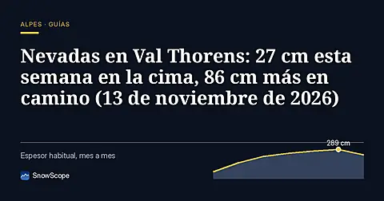
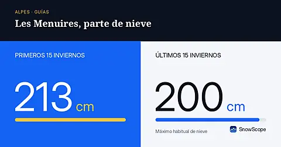
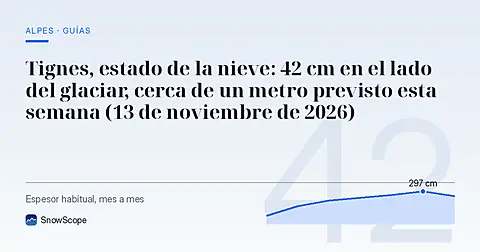
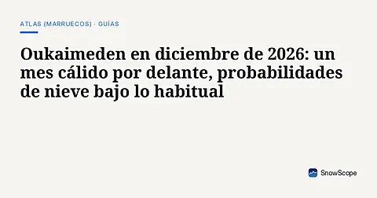

Partes de nieve · Esquí
Partes de nieve diarios para esquiadores: dónde está la nieve, qué llega y dónde esquiar, a partir del mapa de nieve de SnowScope y de las estaciones de medida. Cada cifra sale de los datos del día.

Previsión de nevadas en Park City (Utah) el 13 de noviembre de 2026: casi sin nieve en el suelo ahora mismo, unas 5 in cerca de la cima con el temporal del fin de semana y una cota de nieve de 7,400 a 7,700 ft, lluvia en la base y unas 12 in arriba en la semana.

Espesor de nieve en St. Anton am Arlberg el 13 de noviembre de 2026: cerca de 1 cm en la cima (2642 m), 5 cm a media montaña, nada en el pueblo. Esta semana 42 cm en la cima y 33 cm a media montaña, lluvia por debajo de unos 1480 m. Cuánta nieve necesitan las pendientes fuertes.

Nevadas en Val Thorens, 13 de noviembre de 2026: 27 cm caídos en la cima (3175 m) y 17 cm a 2498 m en siete días; el espesor de nieve es de 50 cm y 8 cm. Próximos siete días: 86 cm en la cima, 73 cm a 2498 m, cota de nieve muy por debajo del pueblo. La temporada habitual según 46 inviernos.

Parte de nieve de Les Menuires del 13 de noviembre de 2026: 28 cm en la cima (2838 m), nada en el suelo a 2112 m ni a 1386 m. Unos 80 cm esperados en la cima en siete días, cota de nieve hacia 1500 a 1700 m. Por qué Val Thorens, 450 m más arriba en el mismo valle, ya tiene más.

Estado de la nieve en Tignes el 13 de noviembre de 2026: 42 cm en la cima (3447 m), 12 cm a 2503 m, valle sin nieve a 1559 m y 99 cm previstos en la cima en siete días, con lluvia por debajo de unos 1700 m. La comparación con 46 inviernos pasados.


Un mapa de pendientes de Les Grands Montets y otras siete estaciones muestra cuánto terreno supera los 30°, 35° y 40°, y por qué ese umbral importa para los aludes.

Un plan barato de 3 días en el lago de Como en diciembre con precios reales 2026-27: trenes, barcos, funicular y esquí en Piani di Bobbio o Madesimo, lo que ahorras frente a Cortina y la probabilidad de nieve en Navidad.

La nieve de hoy en Livigno, lo que dice la previsión estacional europea para diciembre y por qué en Navidad la altitud gana a un mes templado.

La nieve de hoy en Cortina, la previsión estacional europea para diciembre y nuestras probabilidades de una Navidad blanca en el este de los Dolomitas.

Dónde diciembre de 2026 parece más o menos nevado en los Dolomitas, de Val Gardena a Cortina: la previsión estacional europea, nuestro mapa y las probabilidades de una Navidad blanca.

Cuánta agua podría guardar la nieve del Atlas en febrero de 2027: la previsión estacional europea es unos 3 °C más cálida y más húmeda al oeste y al sur, así que las probabilidades de nieve siguen bajas en las cuencas de Marruecos.

La previsión estacional europea hace enero de 2027 unos 2 °C más cálido en el Atlas. Nuestra tendencia para el espesor de nieve, el agua de la nieve y el agua almacenada para los ríos de Marruecos.

El Bou Iblane sigue sin nieve. La previsión estacional europea ve un diciembre claramente más cálido, y en todo el Medio Atlas nevado nuestras probabilidades se inclinan a menos nieve.

Dónde diciembre de 2026 parece más o menos nevado de Montana a Nuevo México: la previsión estacional europea y nuestro mapa, con Colorado, Utah y las Rocosas del Norte.

¿Se llenará el manto de nieve de los Écrins a los Alpes Marítimos y el Piamonte como de costumbre en diciembre de 2026? La previsión estacional europea y nuestro mapa, montaña a montaña.

Todavía sin nieve en Oukaimeden. La previsión estacional europea ve un diciembre más cálido en el Alto Atlas, y nuestro mapa muestra probabilidades más bajas en casi todas las cumbres.

La nieve de hoy en Grands Montets, la previsión estacional europea para diciembre y nuestro mapa de dónde diciembre parece más o menos nevado alrededor del Mont Blanc.